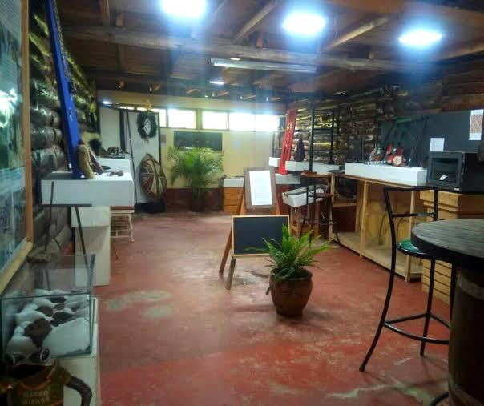
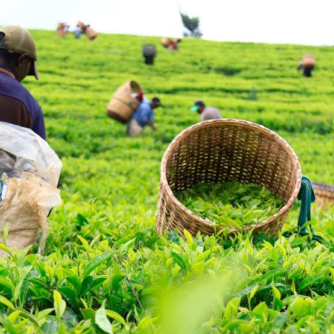
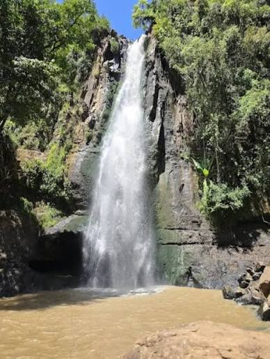
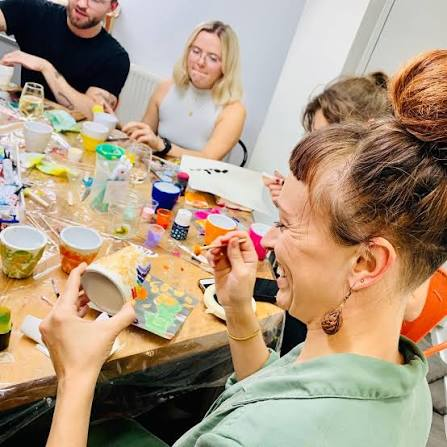

Tea country. Highland forest. Cave stories. A county worth slowing down for.
Kericho is best known for its tea — and rightly so. But the county holds far more than green fields. There are caves with histories older than the roads that lead to them, waterfalls hidden in forest, museums preserving the memory of the Kipsigis people, and communities whose welcome is as warm as the highland sun.
Below, we've grouped what Kericho offers into four kinds of experience. Each one is built around sites we know, routes we have walked, and communities we work with.

Kericho is the heartland of the Kipsigis community, and our cultural sites tell a story that stretches back centuries. These are places of memory, tradition and identity — and visiting them is a chance to understand Kericho from the inside.
Note: Some cultural sites have customs and protocols that visitors should respect. We will advise you before your visit.
Kericho produces some of the finest tea in the world, and our agritourism experiences take you right into the heart of it — from the field to the factory to the cup.
We are working with tea estates including Ernestea Tea Company, Ketepa and Chesumot to formalise visit arrangements.


Kericho's natural sites are some of its best-kept secrets — known mostly to the communities who live near them. We are working carefully to open them up for visitors while keeping them safe and protected.
Important: Some of these sites are not yet fully developed for visitors. Please contact us before planning a visit so we can advise on access, safety and local arrangements.
Kericho's high altitude and cool climate have made it a natural home for athletics and outdoor sport. Our sports sites offer visitors a chance to train, watch or simply enjoy the energy of Kenyan sport.

One of the most meaningful parts of visiting Kericho is meeting the people who make it work. Along our routes, we include visits to self-help groups and community-based organisations — giving visitors a chance to see development in action and, if they wish, to support it directly.
Learn More About Our Community Work